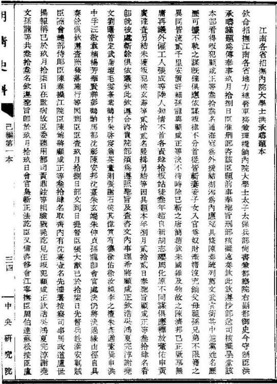
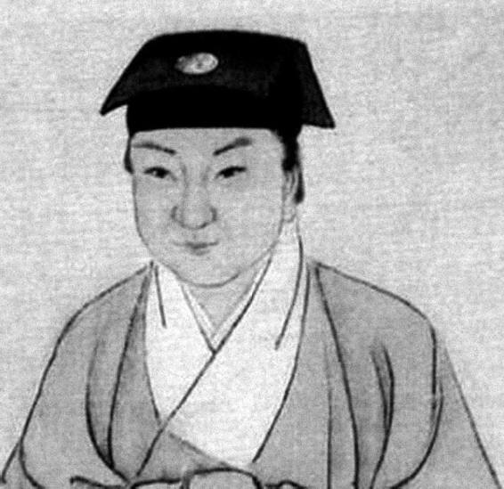

完淳被捕的时间，郭沫若认为是丁亥年（1647）六七月之交，地点为华亭。因是要犯，被捕后，清政府很快将其解往南京。上述时间，正好途中有熟人目击，故可以确定：
顺治丁亥七月望，夏子存古以奉表唐王谢恩，为海上逻卒所获。洪经略密行土抚军，索存古甚急。时余读书虎丘石佛寺，不知也。一日，乘凉散步，将至憨憨泉，见一小沙弥同青衣数人汲水而饮，遥望沙弥有似存古，趋视之，则竟是也。问之，则曰：“我已就缚上道，无资斧，其为我谋之。”余急索囊中所有倾付之，送其登舟。有经略差官王姓者，虑有他谋，诘询姓名，词气甚厉。余以世谊交情详告之。且曰：“吾为行者治装，于尔未尝无益，何怒之有？”于是沽酒脯为别。[43]
从杜登春目击的情形看，完淳上路时一身萧然，而满清却不对犯人提供任何帮助，时当盛夏，连饮水都只能路旁急就。沙弥，就是小和尚；这两年完淳大概一直做此装束，一来作为对薙发的抗拒，二来利于在斗争中掩护身份。完淳自己也在《南冠草》“虎丘遇九高”（九高是杜登春的表字）中记了这次巧遇：“竹马交情十七年，飘流湖海竟谁怜”，并说“楚囚一去草如烟”，[44]好像“南冠草”的题目便是在这首诗中酝酿的。
洪经略即洪承畴，清军下江南后，委他做“招抚南方总督军备大学士”，眼下，是他催令土国宝急解完淳到南京。他的出场，将为完淳的英雄谢幕做最好的陪衬。屈大均记曰：
被执至留都，叛臣洪承畴欲宽释之，谬曰：“童子何知，岂能称兵叛逆？误堕军中耳。归顺当不失官。”完淳厉声曰：“吾尝闻洪亨九先生本朝人杰，嵩山杏山之战，血溅章渠，先皇帝震悼褒卹，感动华夷。吾尝慕其忠烈，年虽少，杀身报国岂可以让之。”左右曰：“上坐者，即洪经略也。”完淳叱之曰：“亨九先生死王事已久，天下莫不闻知，曾经御祭七坛，天子亲临，泪满龙颜，群臣呜咽。汝何等逆贼，敢伪托其名以汙忠魄！”因跃起，奋骂不已。承畴无以应，惟色沮而已。[45]
完淳为洪承畴所杀是事实，但上述具体情节，虚构和演义的可能性大。因为同一情节，也曾出现在别人身上，例如左懋第被扣北京期间，洪承畴出来见他：
懋第叱曰：“此鬼也！承畴统制三边，松、杏沦亡，身殉兵革。先帝赐祭，加醮九坛，优以恤荫。承畴死久矣！若何得复存？来者鬼也！”[46]
几无差别，其中必有张冠李戴者。
完淳在狱中大概关押了一个多月，其间确切可信的事迹，还是以《南冠草》和两封遗书为准。由《南冠草》我们得知，他是被监禁于从前某位明朝太监的宅第中；《被羁待鞫在皇城故内珰宅》：“重来中贵宅，空挂侍臣冠。”又从《御用监被鞫拜瞻孝陵恭纪》知，审讯地点为前御用监，但也变更过别的地点，例如西华门（《西华门与同难诸公待鞫》）。
被害日期，为当年九月十九日。陈去病《五石脂》：
存古就义之日，向仅附见《苏州府志•刘曙传》，云系九月十九日，殊未敢信。顷读吴下逸民所撰《刘公旦死义事略》，亦谓九月十九日赴市，同刑者三十余人。[47]
据洪承畴当时呈自南京的报告，内言：
玖月拾捌日，臣准刑部咨，该臣题前事：“奉圣旨：‘刑部核拟速奏，钦此。’钦遵。抄部送司，核拟呈堂，该本部看得：叛犯顾咸正等叁拾叁名，通海寇为外援，结湖泖为内应，秘具条陈奏疏，列荐文武官衔，其中逆党姓名，历历可据。不轨之谋既确，俱应依谋叛律，不分首从皆斩……”臣查玖月拾捌日部文到日，提督臣张大猷已于拾柒日先督兵赴淮安剿贼，臣随会礼部侍郎臣陈泰、操江院臣陈锦，将顾咸正等叁拾肆名取齐。内有沈台壹名，先据署按察司事马政道、卢世扬报称，已于玖月拾柒日在监病故，臣委听用都司黄鼎铉等相验戮尸讫。见在叛犯顾咸正、钦浩、吴鸿、夏完淳、谢尧文、孙龙等共叁拾叁名，钦遵圣旨，即于玖月拾玖日会官枭斩正法讫。[48]

洪承畴就处置夏完淳等给朝廷的报告
此系清朝内阁档案。《夏完淳集笺校》笺校者白坚说：“从中非仅尽悉此案被难者姓名，且可确知完淳在此案中之实际地位⋯⋯完淳自与顾咸正同为主谋首事者，诸家记载乃据实直书，并非因其年少才高而故为夸饰也。”清亡后这批档案险遭化浆造纸的厄运，后由中央研究院历史语言研究所组织整理，陆续出版。

夏完淳像
“神童”这个名称，近来不见使用了，间或在文字上称人为“天才”或“才子”，差不多等于是骂人的词令。但有这种幼慧早熟的人存在，却是无可否认的事实。（郭沫若）
此件为清廷内阁大库档案。民国间，由中央研究院历史语言研究所将内库档案陆续整理出甲至丁编，该所迁台后，又从运台的一百箱余档，整理出戊至癸各编。洪承畴这份报告，便收在己编第一本。当年陈去病自不可能看到，不过，它最终证实了陈的看法：完淳被害于丁亥年九月十九日。
从洪承畴报告知，先是刑部于审讯结束后奉圣旨“核拟速奏”，迅速复核并拟定量刑，之后刑部上报：罪行确凿，所有涉案三十三人，一律处死。刑部的判决于九月十八日到达南京，次日，洪承畴就将它予以执行。
据以上推断，完淳的绝笔——留给嫡母和发妻的两件遗书——应写于九月十八至十九日之间，即被告知死刑判决后。其间，遗恨、愧负、心痛之种种，是不必说了。比较重要的是，我们借此得知两点：一、父亲一死，“淳已自分必死”，明确自己也不久于人世；“斤斤延此二年之命”，“贵得死所耳”，多活了这两年，只是为了死得正确。二、特别嘱咐有孕在身的妻子：“淳死之后，新妇遗腹得雄，便以为家门之幸”，盼望这遗腹乃是男胎，将来好继承他的遗志。[49]
同日被害三十三人中，还有他的岳父钱栴。有人说事到临头，钱栴发生动摇：“半村、完淳皆被执，赴南都，同锢一室。半村未免乞哀，且重行贿以祈脱。完淳怫然以为不可，赋诗规之”[50]。但也有说他“不屈死”[51]。未知究竟，但有一点是肯定的，他们翁婿双双遇难。这时，我们当然会想到那年仅十八的钱家小姐秦篆，她在同一天，既失去丈夫，又失去了父亲。